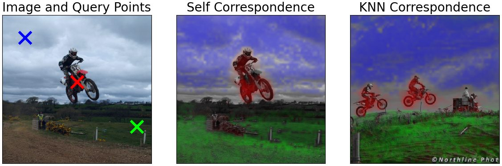
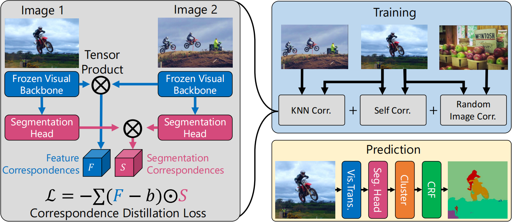

引言
无监督的语义分割是图像处中最具挑战的领域之一，在一些例如医学、生物或者深空探索等领域，对于图像的真实标注是无法获取的、不是完全可信的、又或者是压根的人都没见过的，即使真实标注是可知可控的，标注所需要的人力成本也是巨大的。于是，如果一个模型有无监督语义分割的能力，能在一定程度上给出基于模型自身“理解”的有意义的分割（这里的“理解”并不一定表示模型是强智能的、和人一样的理解，而是模型对于分割或者分类按照某种足够可信的方式组织完成的、或者说可以被人理解和认可的），就显得尤为重要。2022 年，STEGO 就给出了这样一种尝试，在无监督语义分割上达到了 SOTA 的性能。
原理方法
STEGO 一言以蔽之：使用 Contrastive Loss 提供了无监督的特征层面的聚类，就如原文中说的： STEGO distills pretrained unsupervised visual features into semantic clusters using a novel contrastive loss. Contrastive Loss 最大化图像和它相近的样本（比如经过图像增强变换得到的旋转或者裁剪的新图像）的相似度，最小化图像和它相反的负样本（那些跟图像没有关系的随机图像），在目前能够在提供很好的性能，比其他一众方法都强。其中有例如 IIC 和 PiCIE 都最大化图像及其增强变换的特征之间的互信息，这就涉及到了需要在模型中首先提取特征的信息。STEGO 则放弃了提取特征这一部分，而是使用 DINO 这样预训练的网络提取特征，然后重点设计后端的聚类以用于语义分割。不得不说，DINO 确实很强，DINO 提取的特征已经可以给出包含显式信息的语义分割结果，有那么一点特征层面开始“理解图像”的意思了。STEGO 的结构允许它采用任何深度网络结构来提取特征，这也是它较为灵活的一方面。在特征层面，STEGO 使用正样本和负样本之间的相关性和非相关性，依赖特征本身的对应关系指导后端的分割头，使得基于聚类的分割头让特征分布更加紧致且保持原样的对应关系。
具体实现
下面根据论文来具体的介绍一下实现的过程。
特征对应关系（Feature Correspondence）
假设现有两张特征图 \(f \in \mathbb{R}^{CHW}, g \in \mathbb{R}^{CIJ}\)，\(C\) 表示通道，\((H,ｗ),(I,J)\) 分别表示图像的大小，于是特征对应关系（Feature Correspondence）定义为 \[\begin{equation} F_{hwij} := \sum_{c} \frac{f_{chw}}{|f_{hw}|} \frac{g_{cij}}{|g_{ij}|} \label{eqfc} \end{equation} \] 其意义是在 \(f\) 的 \((h,w)\) 位置和 \(g\) 的 \((i,j)\) 位置的特征的余弦相似度。如果 \(f = g\) 则表示同一张特征图上的不同位置。 作者将特征对应关系可视化，如下图所示  可以看到左侧图像以蓝色、红色、绿色标记的点分别作参考，中间表示在同一张图片中与以上三个点的特征呈现相关性的区域，并用对应颜色涂抹的结果，右侧表示在另一张图片的结果，不难发现，不论在同一图片还是另一图片中，同一类物体的特征都能够明显的聚集并做区分，也就是说使用特征对应关系能够提供很高性能的相关性描述，这样正是它作为无监督语义分割的学习误差函数的优势。
特征对应关系的蒸馏（Distilling Feature Correspondence）
STEGO 对特征对应关系实现了所谓的 “distill” 以实现无监督的分割。假设 \(\mathcal{N} : \mathbb{R}^{C'H'W'} \rightarrow \mathbb{R}^{CHW}\) 是已经完成训练的骨干网络，例如论文中选择的 DINO 网络，目的是提取出图片的特征 \(\mathcal{f}\)，其特征维度为 \(C \times H \times W\)。所选择的骨干网络在训练中是被冻结的。STEGO 在骨干网络后面再增加了一个分割头 \(\mathcal{S} : \mathbb{R}^{CHW} \rightarrow \mathbb{R}^{KHW}\)，将特征映射到一个 \(K < C\) 低维的空间，而最终目的就是找到一个非线性的分割映射 \(\mathcal{s} : \mathcal{S(f)}\)，从而对提取的特征 \(\mathcal{f}\) 实现紧致地、保持相关关系的聚类，然后根据聚类结果得到了分割结果。那么 loss 是怎么计算的呢？原文中使用了一对图像（Image Pair），分别得到它们的特征 \(\mathcal{f}\) 和 \(\mathcal{g}\)，首先根据 \(\eqref{eqfc}\) 计算它们的特征对应关系，记作 \(F_{hwij}\)。然后再通过分割头 \(\mathcal{S}\) 分别计算 \(\mathcal{f}\) 和 \(\mathcal{g}\) 在低维空间中的映射特征 \(\mathcal{s}\) 和 \(\mathcal{t}\)，接着根据 \(\eqref{eqfc}\) 同样分别计算它们之间的特征对应关系，记作 \(S_{hwij}\)。然后，loss 定义为 \[\begin{equation} \mathcal{L}_{simple-error}(x, y, b) = -\sum_{hwij}(F_{hwij} - b) S_{hwij} \label{eqsimp} \end{equation} \] 其中 \(b\) 是一个可学习的，称之为“negative pressure”的东西，为了防止不收敛。这个式子中的乘法，其实是可以看成是基于 \(cos\) 的相似度，如果括号中为正，那么 \(S_{hwij}\) 会趋向于更加接近 \(F_{hwij}\)，也即是保持了和原来特征的对应关系，而括号中为负，那么 \(S_{hwij}\) 被鼓励趋向于远离 \(S_{hwij}\)。事实上，作者发现 \(\eqref{eqsimp}\) 有时候是不稳定的，于是他增加了两个技巧，Spatial Centering 和 Zero Clamping，然后就有了下面的式子 \[\begin{equation} \begin{split} F_{hwij}^{SC} = F_{hwij} - \frac{1}{IJ}\sum_{i'j'}F_{hwi'j'} \\ \mathcal{L}_{corr}(x, y, b) = -\sum_{hwij}(F_{hwij}^{SC}-b)\max(S_{hwij}, 0) \end{split} \label{eqsophi} \end{equation} \] 作者说了，这个式子经过证明和 Potts Model 是一样的，具体的看论文中的附录部分，所以这个式子不是胡编乱造，是有理论支撑的 =_=。
模型结构
整个模型的结构如下图所示，其中的 loss 其实是三部分的和，图像和本身的 Self Correspondence，图像和特征空间中离它最近的相邻图像之间的 KNN Correspondence，当然 KNN 可以提前离线生成，不需要再训练中消耗时间，以及图像和另外任意不相关的随机图像之间 Random Correspondence。最后的 CRF 是用来更好的对齐图像中的边缘和分割结果的。 
总结
STEGO 实现了一个无监督的聚类方法，其中的 loss 设置很巧妙，通常来说如果特征已经具有显式的聚类（分割）的能力，那么在后端分割应该利用这个信息，并且在保持对应关系的同时，能够整体上加强这种能力。而且 STEGO 的结构非常灵活，能够使用任何特征提取的框架。相当于在后端增加了一个高性能的、稳定的分割头。
论文地址：https://arxiv.org/abs/2203.08414
论文代码：https://github.com/mhamilton723/STEGO/tree/master